Programfejlesztés
 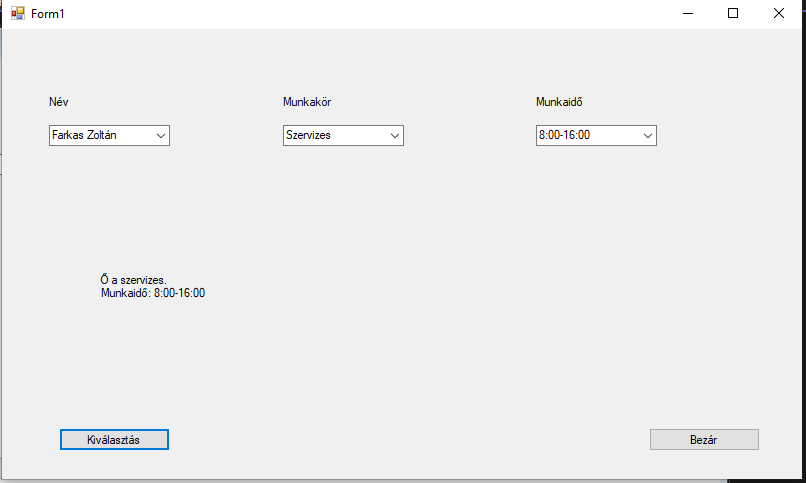
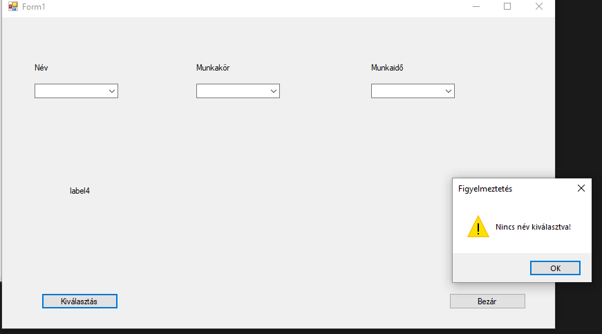
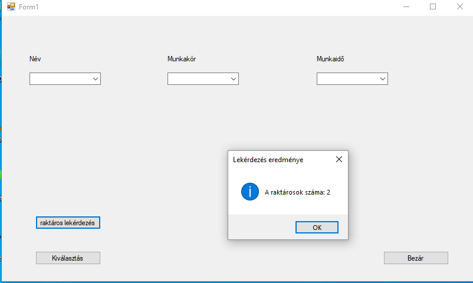
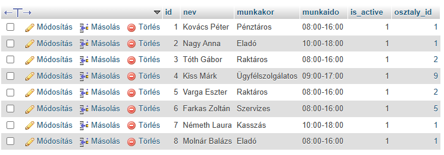
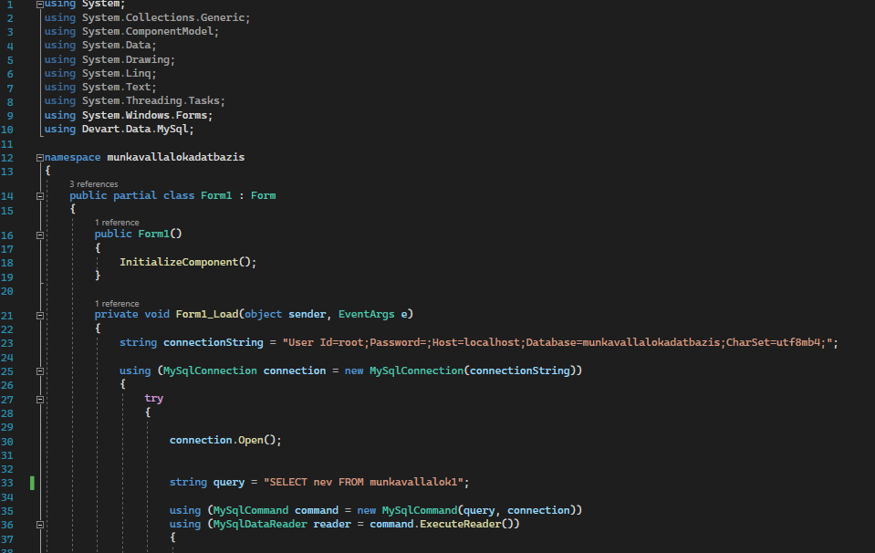
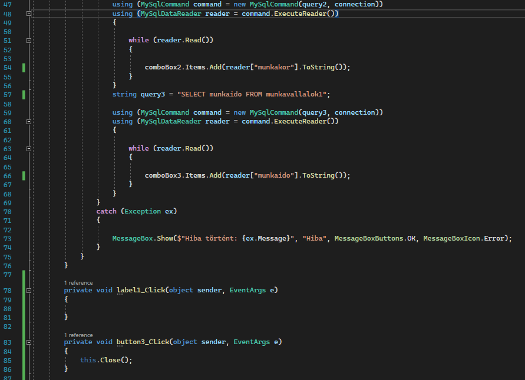
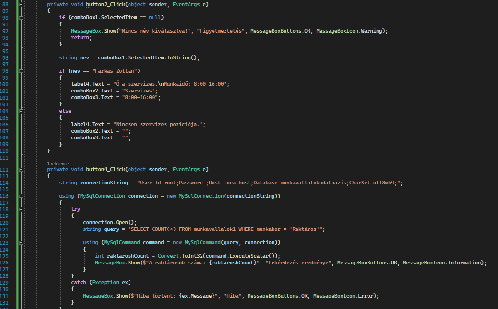
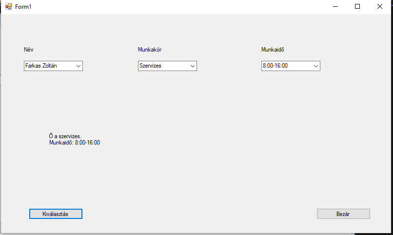
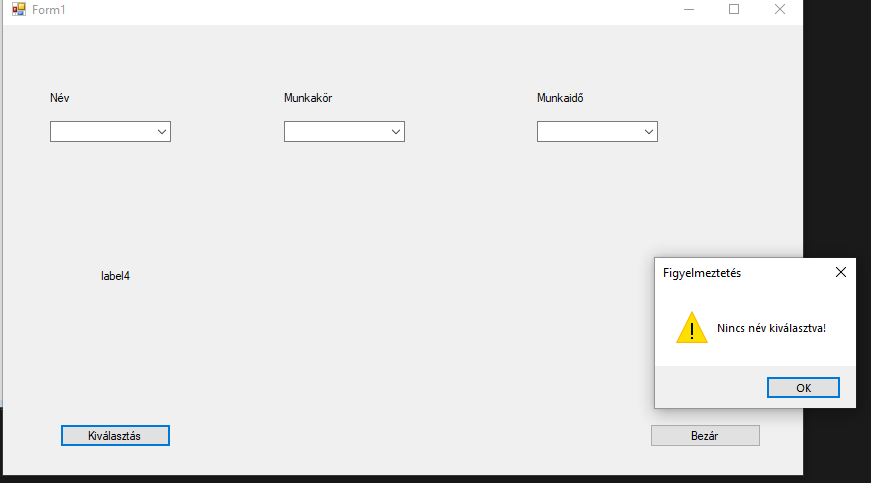
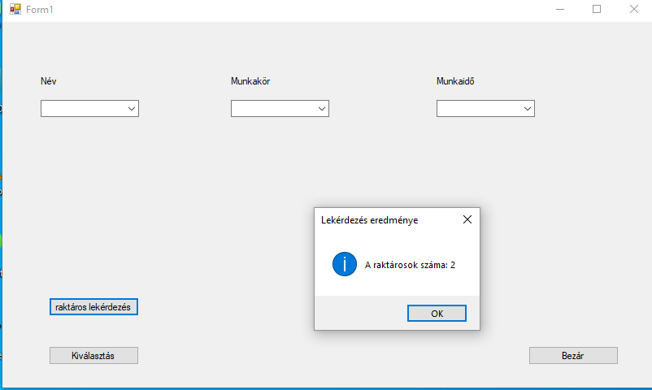
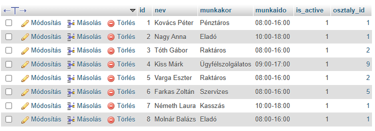
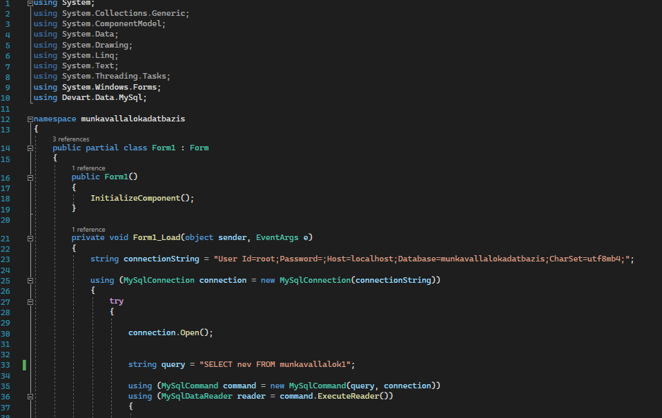
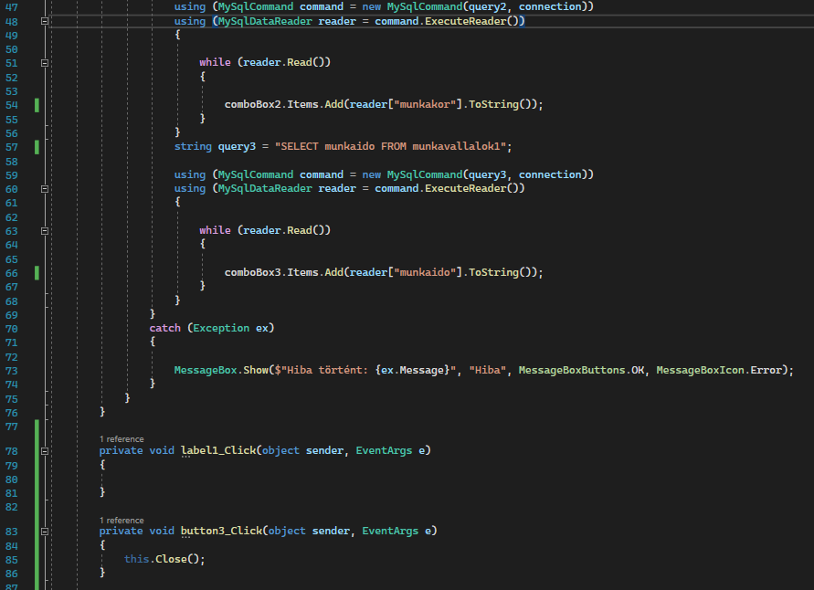
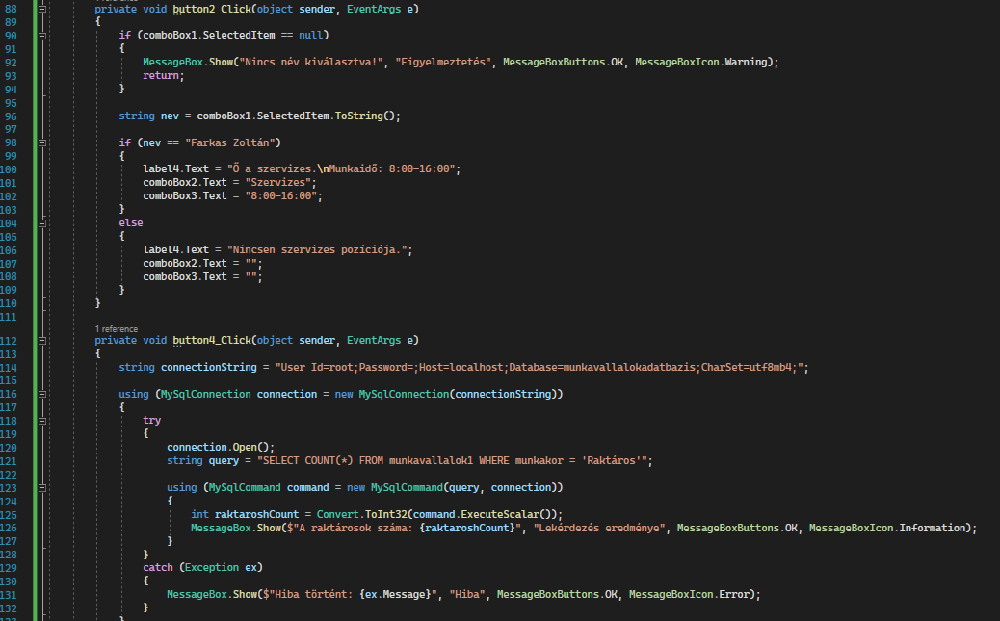
Itt találhatók a 13. évfolyam projektjei és anyagai.
Az IoT tantárggyal betekintést nyertem az eszközök közötti kommunikációba és a rendszerek automatizálásába.
Az önéletrajz készítése sok nehézséggel járt, de sikerült tökéletesíteni.
A C# alapú UI-fejlesztésben elsajátítottam a Windows Forms vezérlők és eseménykezelés használatát, valamint fejlődtem a felhasználóbarát tervezésben és a problémamegoldásban.

A Robottechnika tantárgy során az EasyEDA segítségével elsajátítottam az elektronikai tervezést, PCB-készítést, és a logikus áramköri elrendezés, valamint az útvonalvezetés optimalizálásának kihívásaival is megismerkedtem.